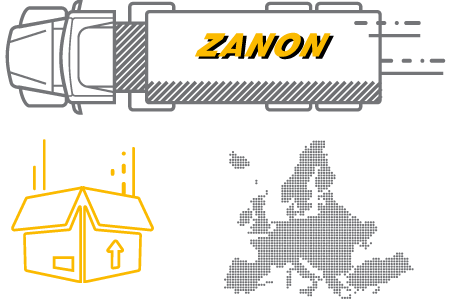

ZANON Transports et Logistique, spécialiste du transport routier de marchandises depuis
1953, nos équipes spécialisées prennent en charge chaque année 40 000 dossiers de transport. Chaque dossier
bénéficie d’un tracing individuel, du chargement à la livraison, chaque client bénéficie d’un accès à ses
données au cours des étapes de la chaîne de livraison. Nos équipes informent nos clients avec une totale
transparence inspirant ainsi confiance et sérénité. Nous maîtrisons les opérations de transport que nous prenons en charge.
ZANON Transports et Logistique réalise chaque année 5 millions de km grâce à sa flotte de véhicules
et ses chauffeurs spécialisés. Nos conducteurs sont formés à l’Eco-conduite pour atteindre les plus bas niveaux de
consommations de gazole. En 2010, l’entreprise s’est engagée dans une démarche de réduction des émissions de CO2 grâce à
son engagement dans la charte ADEME. Tous les 3 ans, un plan stratégique environnemental est établi, ce plan réuni ECONOMIE
et ECOLOGIE pour que les actions environnementales soient pertinentes et dûment réalisées.Notre flotte de véhicules dont la
moyenne d’âge de 2 ans, utilise les techniques les plus récentes de réduction des effets CO2.
ZANON Transports et Logistique, membre du groupement Evolutrans et du réseau européen VOLUPAL, la société ZANON
offre à ses clients la possibilité de livrer de 1 à 6 palettes dans toute l’Europe : « messagerie » palettisée.
Le réseau VOLUPAL, né au sein du groupement EVOLUTRANS en 2003, regroupe près de 120 transporteurs répartis sur le territoire
français et unis pour couvrir le territoire européen dans des délais très rapides et une qualité maîtrisée et contrôlée.